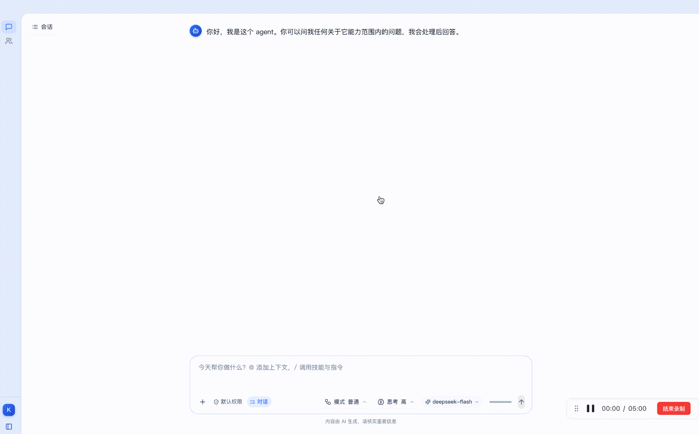
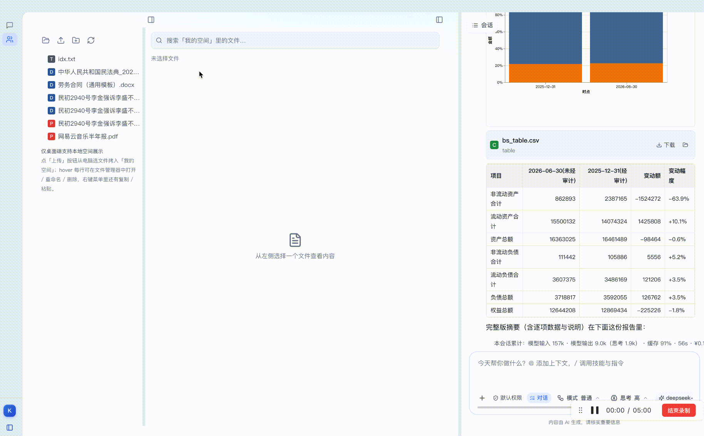

Keeper 跑在你自己机器上的本地知识库 Agent——读你的文件、按语义检索、改你的文件、 把结果交付给你，并记住关于你的事。文件、记忆、会话、可观测数据，全部留在本地。
「对话」是 Agent 工作的场所，「我的空间」是知识库的物理形态——你的文件就是 Agent 干活的知识库。
流式回复 + 自主规划过程可逐步展开；用量、成本、耗时一目了然。支持附件、@上下文、/插件，产物就地渲染成图表与流程图。
你的文件就是知识库本体。Markdown / 代码 / 表格 / PDF / 图片 / 视频多格式预览，可编辑并保存回原文件；桌面端走原生文件操作。
围绕你的本地文件，Agent 完成一整条工作流。
语义检索在本机跑：本地嵌入模型推理，文件内容不外传； 没装模型也能自动降级为纯关键词检索。全程离线，不依赖任何外部服务。
Keeper 是「本机单用户」应用——没有账号体系、没有云端同步，数据主权在用户本地。
下方为两段操作演示：对话操作流程 与 搜索「我的空间」操作流程。


一个进程 = 内核 + 页面，数据目录完全一致，切换形态零迁移成本。
不想装桌面端？也可运行命令行形态（Python 内核 + 网页）：
./start_keeper.sh 后打开 http://127.0.0.1:8080。